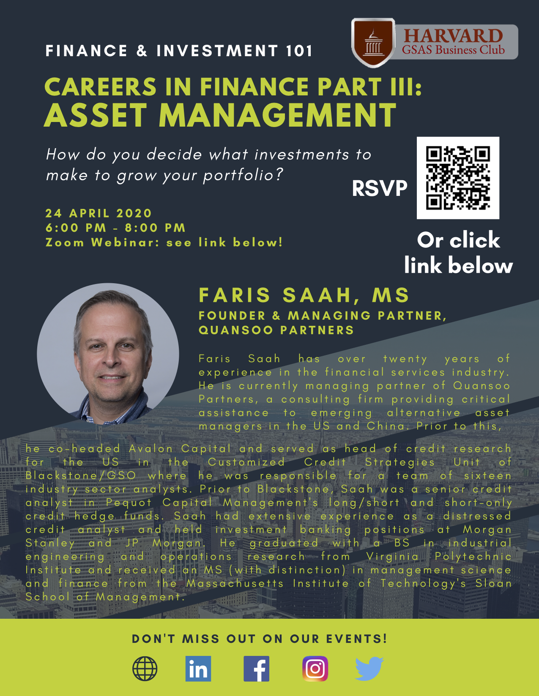
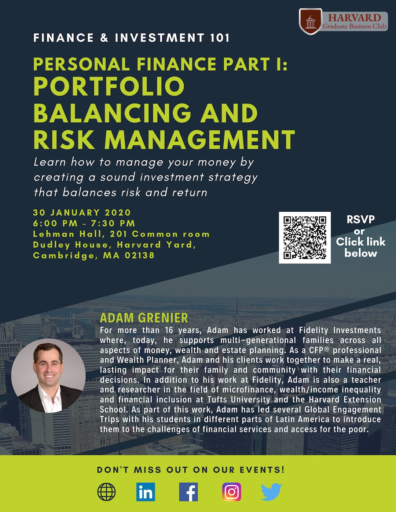

Finance & Investment Careers in Finance Part III: Hedge Funds
Mar. 12, 2020 6-8pm
Harvard Main Campus

Apr. 20, 2020
Zoom Webinar

Mar. 12, 2020 6-8pm
Harvard Main Campus
Date: TDB
Harvard Main Campus
Date: TDB
Harvard Main Campus
Date: TDB
Harvard Main Campus
Feb. 19, 2020, 7-8pm
Harvard Main Campus

Jan. 30, 2020, 6-8pm
Harvard Main Campus

Nov. 12, 2019, 6-8pm
Harvard Main Campus

Oct. 22, 2019, 6-8p
Harvard Main Campus

April 16, 2019, 6-8pm
Harvard University CGIS Knafel Building K050
Every year (usually in the spring) the Harvard GSAS Business Club offers this Finance Skills Workshop. This program begins with an introduction to quantitative analysis in finance. Dr. Hladik discusses what it means to be a “quant”, as well as review the statistical and econometric background that is important for many quantitative roles. Finally she describes how statistical and econometric concepts can be applied to risk management and trading.
Dr. Hladik also be discusses how one can leverage training from their PhD or graduate school degree to pursue a career in finance.
Finance Skills Workshop
Alumna Instructor: Karen Hladik, Ph.D. ’84, Business Economics
Karen Hladik has had a long and successful career in the financial industry, focusing on quantitative modeling and portfolio analytics in equity markets. Karen has a unique perspective on how one can apply one’s Ph.D. in a variety of corporate, consulting, and financial positions. She is currently a member of the GSAS Alumni Association Council and a director of Harvard University’s Alumni Association.
March 26, 2019, 6-8pm
Harvard University CGIS Knafel Building K050
Are you interested in pursuing a finance-related career and learning more about the common and esoteric vocabulary of options and risk management?
Every year the Harvard GSAS Business Club offers the Jargon Jungle Workshop. This interactive program, led by Karen Hladik (PhD '84) will help you better understand how to effectively use the terminology in the stock market and financial industry.
Dr. Hladik also be discusses how one can leverage training from their PhD or graduate school degree to pursue a career in finance.
Jargon Jungle Workshop, Overview of Financial Asset Classes & An Introduction to the Vocabulary of the Stock Market
Alumna Instructor: Karen Hladik, Ph.D. ’84, Business Economics
The financial industry is notorious for its own language, from commonplace stocks (“equities”) and bonds (“fixed income”) to the more esoteric vocabulary of options and risk management. This workshop will cover some of the basic terminology used in the stock market, including:
Included in this workshop is a glossary of financial terms.
Karen Hladik has had a long and successful career in the financial industry, focusing on quantitative modeling and portfolio analytics in equity markets. Karen has a unique perspective on how one can apply one’s Ph.D. in a variety of corporate, consulting, and financial positions. She is currently a member of the GSAS Alumni Association Council and a director of Harvard University’s Alumni Association.